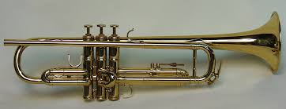
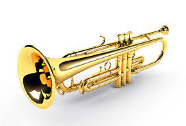

The trumpet is a brass instrument commonly used in classical and jazz ensembles. The trumpet group ranges from the piccolo trumpet with the highest register in the brass family, to the bass trumpet, which is pitched one octave below the standard B♭ or C Trumpet. Trumpet-like instruments have historically been used as signaling devices in battle or hunting, with examples dating back to at least 1500 BC. They began to be used as musical instruments only in the late 14th or early 15th century. Trumpets are used in art music styles, for instance in orchestras, concert bands, and jazz ensembles, as well as in popular music. They are played by blowing air through nearly-closed lips (called the player's embouchure), producing a "buzzing" sound that starts a standing wave vibration in the air column inside the instrument. Since the late 15th century, trumpets have primarily been constructed of brass tubing, usually bent twice into a rounded rectangular shape. There are many distinct types of trumpet, with the most common being pitched in B♭ (a transposing instrument), having a tubing length of about 1.48 m (4 ft 10 in). Early trumpets did not provide means to change the length of tubing, whereas modern instruments generally have three (or sometimes four) valves in order to change their pitch. Most trumpets have valves of the piston type, while some have the rotary type. The use of rotary-valved trumpets is more common in orchestral settings (especially in German and German-style orchestras), although this practice varies by country. A musician who plays the trumpet is called a trumpet player or trumpeter.
The English word "trumpet" was first used in the late 14th century. The word came from Old French "trompette," which is a diminutive of trompe. The word "trump," meaning "trumpet," was first used in English in 1300. The word comes from Old French trompe "long, tube-like musical wind instrument" (12c.), cognate with Provençal tromba, Italian tromba, all probably from a Germanic source (compare Old High German trumpa, Old Norse trumba "trumpet"), of imitative origin. The earliest trumpets date back to 1500 BC and earlier. The bronze and silver Tutankhamun's trumpets from his grave in Egypt, bronze lurs from Scandinavia, and metal trumpets from China date back to this period. Trumpets from the Oxus civilization (3rd millennium BC) of Central Asia have decorated swellings in the middle, yet are made out of one sheet of metal, which is considered a technical wonder for its time. The Shofar, made from a ram horn and the Hatzotzeroth, made of metal, are both mentioned in the Bible. They were said to have been played in Solomon's Temple around 3000 years ago. They were said to be used to blow down the walls of Jericho. They are still used on certain religious days. The Salpinx was a straight trumpet 62 inches (1,600 mm) long, made of bone or bronze. Salpinx contests were a part of the original Olympic Games.
